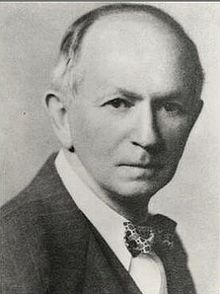

Chapter 3 Models for two populations
Lesson plan:
3.1 Qualitative analysis of models for two populations
In this section, we extend the qualitative analysis we’ve performed for a single populations to models with two populations. Many of the methods introduced below extend to the case of multiple populations.
3.1.1 Isoclines of null growth
Take a two-dimensional model. For each equation, we can write the solution of \(dx/dt = 0\) as a function of \(y\), thereby defining the curve in the \((x, y)\) plane (the “phase plane”) for which the growth of species \(x\) is zero. For a concrete example, take the classic predator-prey Lotka-Volterra system:
\[ \begin{cases} \dfrac{d x(t)}{dt} = \rho\, x(t) - \alpha\, x(t)\, y(t)\\ \dfrac{d y(t)}{dt} = -\delta\, y(t) + \beta\, x(t)\, y(t) \end{cases} \]
where \(x(t)\) is the density of the prey species at time \(t\) and \(y(t)\) that of the predator. We can interpret \(\rho\) as the intrinsic growth rate of the prey (i.e., the growth when the predator is absent), \(\delta\) as the death rate of the predator, and \(\alpha\) and \(\beta\) as the loss of (gain in) growth due to predation.
History: Alfred J. Lotka (1880-1949)

Alfred Lotka was born to French-speaking American parents in Lemberg (then part of the Habsburg empire, now Lviv, Ukraine). He studied in France, Germany and England, receiving a BSc in 1901 and a DSc in 1912 from Birmingham university. He moved to the US in 1902, and worked at the US Patent office, as an editor of Scientific American, and as a statistician at the Metropolitan Life Insturance Company in NYC. He wrote more than a hundred papers and five books, spanning a large range of topics. He’s best known for the book Elements of Physical Biology, his contributions to demography, and one of the first studies dealing with bibliometrics (Lotka 1926).
Starting in 1910 (reprinted as Lotka (2002)) he investigated coupled differential equations relating to chemical as well as ecological dynamics. In Lotka (1920) he studied a system of two ODEs that gave rise to perpetual oscillations: “It was, therefore, with considerable surprise that the writer, on applying his method to certain special cases, found these to lead to undamped, and hence indefinitely continued, oscillations.” He went on to describe “1. A species of organism \(S_1\), a plant species, say, deriving its nourishment from a source presented in such large excess that the mass of the source may be considered constant during the period of time with which we are concerned. 2. A species \(S_2\), for example a herbivorous animal species, feeding on \(S_1\).”
The equations he had derived (and then studied later in more detail) are now termed Lotka-Volterra equations.
Let’s look at a possible trajectory for the system, to gain an intuition of what can happen:
You can see that the population densities, when drawn in the “phase plane” cycle counterclockwise. Let’s try to understand why.
The equation for the prey is zero either when \(x(t) = 0\) or when \(\rho - \alpha\,y(t) = 0\), yielding \(y(t) = \rho / \alpha\). Whenever the density of the predator \(y(t) < \rho / \alpha\), prey will grow; conversely, whenever \(y(t) > \rho / \alpha\), prey will decline.
Graphically:
Similarly, the equation for the predator is zero either when \(y(t) = 0\) or when \(-\delta + \beta\, x(t) = 0\), yielding \(x(t) = \delta / \beta\). Whenever the density of the prey \(x(t) < \delta / \beta\), predators will decline; conversely, whenever \(x(t) > x(t) = \delta / \beta\), predators will grow.
Graphically:
Now let’s put the two graphs together:
Clearly, a possible equilibrium of the system is \((x^\star, y^\star) = (0, 0)\) (often called the “trivial” equilibrium). You can see that there is another equilibrium where the two isoclines meet \((x^\star, y^\star) = (\delta / \beta, \rho / \alpha)\), and that the dynamics will tend to cycle around the equilibrium.
But how do we know whether dynamics will cycle toward the equilibrium, spiral away from it, or describe closed orbits? To answer this question, we can try to extend our linear analysis by Taylor-expanding the dynamics around the equilibrium.
3.2 Local stability analysis
Suppose that a feasible equilibrium \(x^\star\) exists. Then we can ask whether it is attractive, i.e. if trajectories started at initial condition \(x(0)\) will eventually reach \(x^\star\). This problem is in general difficult to solve (but see below); as an alternative, we can test for local asymptotic stability, i.e., ask whether the system will return to the equilibrium if perturbed infinitesimally away from it. In general, whenever we describe an ecological community as a system of nonlinear, autonomous ODEs:
\[ \frac{d x_i (t)}{d t} = f_i (x(t)) \;, \]
we define an equilibrium \(x^\star\) as a vector of densities such that:
\[ \left. \frac{d x_i}{d t} \right|_{{x}^\star} = f_i ({x}^\star) = 0 \quad \forall i \]
A given system might have a multitude of equilibria. When the system is resting at an equilibrium point, it will remain there unless it is perturbed away from it. Local stability analysis is a method to probe whether a system that is perturbed infinitesimally away from an equilibrium will eventually return to it, or rather move away from it.
Taylor series
Single-variable: suppose function \(f\) infinitely differentiable around a point \(x = a\). Then
\[ f(x) = \sum_{k = 0}^\infty \dfrac{D^{k} f(a)}{k!} (x-a)^k = f(a) + \left. \dfrac{d f}{d x} \right|_{a} (x-a)+ \dfrac{1}{2}\left. \dfrac{d^2 f}{d x^2} \right|_{a} (x-a)^2 + \cdots \]
where \(D^{k} f(a)\) is the k-th derivative w.r.t. \(x\) evaluated at \(a\).
Vector-valued functions: now \(f(x)\) is a function of a vector \(x\). To expand around the point \(a\), we need to define the Jacobian matrix
\[ J = Df(x) \]
with elements:
\[ J_{ij} = \dfrac{\partial f_i({x})}{\partial x_j} \]
Next, we define the Hessian tensor (in this case, a three-dimensional tensor):
\[ H_{ijk} = \dfrac{\partial^2 f_i(x)}{\partial x_j\, \partial x_k} \]
It is convenient to write the expansion in component form:
\[ f_i(x) \approx f_i(a) + \sum_j \left . J_{ij} \right|_{a} (x_j - a_j) +\dfrac{1}{2} \sum_j \sum_k \left. H_{ijk} \right|_a (x_j-a_j)(x_k-a_k) \]
Example
Consider the vector-valued function:
\[ f(x) = \begin{pmatrix} x_1^3 + 2 x_2^2\\ x_1 - x_2^3 \end{pmatrix} \]
Approximate the function around a generic point \(a = (a_1,a_2)^T\). The Jacobian is:
\[ J = \begin{pmatrix} 3 x_1^2 & 4 x_2\\ 1 & -3 x_2^2 \end{pmatrix} \]
and the two slices of the Hessian tensor are:
\[ H_1 = \begin{pmatrix} 6 x_1 & 0 \\ 0 & 4 \end{pmatrix} \]
and
\[ H_2 = \begin{pmatrix} 0 & 0 \\ 0 & -6 x_2 \end{pmatrix} \]
as such:
\[ f(x) \approx \begin{pmatrix} a_1^3 + 2a_2^2 + 3 a_1^2 (x_1 - a_1)+ 4 a_2 (x_2-a_2) + 3 a_1 (x1-a_1)^2 + 2 (x_2 - a2)^2\\ a_1 - a_2^3+x_1-a_1-3 a_2^2 (x_2-a_2)-3 a_2 (x_2 - a_2)^2 \end{pmatrix} \]
For example, expanding around \(a = (0, 0)^T\), we obtain:
\[ f(x) \approx \begin{pmatrix} 2 x_2^2\\ x_1 \end{pmatrix} \]
while around \(a = (2, 1)^T\), we find:
\[ f(x) \approx \begin{pmatrix} 2 (x_2^2 + 3 x_1 (x_1-2) + 4)\\ x_1 + 3 x_2(x_2 - 3) + 5 \end{pmatrix} \]
Suppose that a system is resting at an equilibrium \(x^\star\), and that it is slightly perturbed away from it. \(\Delta x(0) = x(0)-x^\star\) is the state of the system immediately after the perturbation. Taylor-expanding around \(x^\star\) and taking only the linear term, we have:
\[ f(\Delta x(0)) = f(x^\star)+ \left. J \right|_{x^\star} \Delta x(0) \]
Where \(J\) is the Jacobian matrix of the system, whose elements are defined as:
\[ J_{ij} = \frac{\partial f_i({x})}{\partial x_j} \]
Each element of this matrix is therefore a function, whose value depends on \({x}\). When we evaluate the Jacobian matrix at an equilibrium point \({x}^\star\), we obtain the so-called “community matrix” \({M}\):
\[ M = \left. {J} \right|_{ {x}^\star} \]
Note that, although each system has a unique Jacobian matrix, there are as many community matrices as there are equilibria. The community matrix details the effect of increasing the density of one species on any other species around the equilibrium point.
We can therefore write the differential equation:
\[ \frac{d \Delta x(t)}{dt} \approx M \Delta x(t) \]
Solution of linear system of ODEs
with solution:
\[ \Delta x(t) = \Delta x(0) e^{Mt} = \Delta x(0) Q e^{\Lambda t} Q^{-1} \]
Where \(Q\) is the matrix containing the (unit) eigenvectors of \(M\), and \(\Lambda\) is a diagonal matrix containing the eigenvalues of \(M\). As such, the eigenvalues of \(M\) determine the stability of the equilibrium \({x}^\star\): if all the eigenvalues have negative real part, then the system will eventually return to the equilibrium after sufficiently small perturbations; conversely, if any of the eigenvalues have positive real part, the system will move away from the equilibrium whenever perturbed. Therefore, depending on the sign of the “rightmost” eigenvalue of \({M}\), \(\lambda_1\), we can determine the stability of \({x}^\star\):
\[ \text{Re}(\lambda_1) \begin{cases} < 0 \to {x}^\star \quad \text{is stable}\\ > 0 \to {x}^\star \quad \text{is unstable} \end{cases} \]
Local asymptotic stability means that the equilibrium is stable with respect to infinitesimal perturbations (“local”), and that returning to the equilibrium could take a long time (“asymptotic”). Ecologists have also studied stronger forms of stability (e.g., “global stability”, in which all trajectories started at positive densities lead to the equilibrium).
For the GLV model, the Jacobian is easy to compute:
\[ J_{ij} = \frac{\partial f_i}{\partial x_j} = a_{ij} x_i \]
and
\[ J_{ii} = \frac{\partial f_i}{\partial x_i} = r_i + \sum_j a_{ij} x_j + a_{ii} x_i \]
At equilibrium \(r_i + \sum_j a_{ij} x_j = 0\), and therefore:
\[ M = \left. {J} \right|_{ {x}^\star} = D(x^\star)A \]
\[ \frac{d \Delta x(t)}{dt} \approx \left . J \right |_{x^\star} \Delta x(t) \]
where now we have a matrix \(J\) composed of four partial derivatives (Jacobian):
\[ J = \begin{pmatrix} \dfrac{\partial \dfrac{d x_1(t)}{dt}}{\partial{x_1}} & \dfrac{\partial \dfrac{d x_1(t)}{dt}}{\partial{x_2}}\\ \dfrac{\partial \dfrac{d x_2(t)}{dt}}{\partial{x_1}} & \dfrac{\partial \dfrac{d x_2(t)}{dt}}{\partial{x_2}} \end{pmatrix} \]
Describing how the growth of the two species change when we change any of the other species. For a given equilibrium \(x^\star\), we can evaluate the matrix \(J\) at the point, obtaining the so-called “community matrix”: \(M_{x^\star} = \left . J \right |_{x^\star}\). As such, we approximate the (local) dynamics around an equilibrium as:
\[ \frac{d \Delta x(t)}{dt} \approx M_{x^\star} \Delta x(t) \]
To understand how to get from this equation to the stability of the equilibrium, we need to take a detour on eigenvalues and eigenvectors.
3.3 Eigenvalues and eigenvectors
For a matrix \(M\), we have that if \(M v = \lambda v\) with \(v\) different from the zero vector, then \(\lambda\) is an eigenvalue and \(v\) the corresponding eigenvector. Practically, you can think of a matrix as an operator that turns a vector into another vector. If the resulting vector is a rescaled version of the initial vector, then you’ve found an eigenvector of the matrix, and the rescaling factor is the associated eigenvalue.
For example, show that \((1, 1)^t\) is an eigenvector of the matrix:
\[ A = \begin{pmatrix} 1 + a & 1-a\\ 2a + 2 & -2a \end{pmatrix} \]
We have:
\[ Av = \begin{pmatrix} (1 + a) v_1 + (1-a) v_2\\ (2a + 2) v_1 - 2a v_2 \end{pmatrix} \]
if \(v = (1, 1)^t\), we have:
\[ Av = \begin{pmatrix} 2\\ 2 \end{pmatrix} \]
and as such \(v\) is an eigenvector of \(M\), with associated eigenvalue \(\lambda = 2\).
3.3.1 Finding eigenvalues
The eigenvalues of a matrix \(M\) are the roots (zeros) of the chacteristic polynomial:
\[ p(\lambda) = \text{Det}(\lambda I - M) = 0 \]
Where does this equation come from? We write:
\[ \begin{aligned} A v = \lambda v\\ \lambda v - Av = 0\\ (\lambda I - A)v = 0 \end{aligned} \]
if \(v\) is nonzero, then the matrix \(\lambda I - A\) must be singular (i.e., have at least one eigenvalue equal to zero). Because the determinant is the product of the eigenvalues, then the determinant must also be zero.
For a \(2 \times 2\) matrix, we have:
\[ \text{Det} \begin{pmatrix} \lambda - a_{11} & -a_{12}\\ -a_{21} & \lambda -a_{22} \end{pmatrix} = (\lambda - a_{11}) (\lambda - a_{22}) - a_{12} a_{21} = \lambda^2 - \lambda (a_{11} + a_{22}) + a_{11} a_{22} - a_{12} a_{21} \]
More compactly,
\[ p(\lambda) = \lambda^2 - \lambda \text{Tr(A)} + \text{Det}(A) \] where \(\text{Tr}(M) = \sum_i M_{ii} = \sum_i \lambda_i\), and \(\text{Det(M)} = \prod_i \lambda_i\). We therefore find:
\[ \lambda = \frac{\text{Tr}(M) \pm \sqrt{(\text{Tr}(M))^2 - 4 \text{Det}(M)}}{2} \] Find the eigenvalues for the matrix \(A\) above:
\[ \lambda = \frac{1-a \pm \sqrt{(1-a)^2+8(1+a)}}{2} = \frac{1-a \pm \sqrt{(1+a^2 -2 a + 8 a + 8)}}{2} = \frac{1-a \pm (a+ 3)}{2} \] The eigenvalues are therefore \(\lambda_1 = 2\) and \(\lambda_2 = -(1+a)\).
3.3.2 Facts about eigenvalues and eigenvectors
Given a matrix \(A\), of size \(n \times n\), a complex number \(\lambda\) is an eigenvalue of \(A\) if there is a nonzero (complex) vector \(v\) such that \(A v = \lambda v\). The vector \(v\) is called the eigenvector of \(A\) associated with \(\lambda\). Note that eigenvectors are defined up to multiplication: if \(v\) is an eigenvector, then \(c v\), with \(c\) real is also an eigenvector. Often, we choose \(v\) such that its norm \(\sqrt{\sum_i v_i^2} = 1\) (called “unit” eigenvector).
A matrix of size \(n\) has at most \(n\) distinct eigenvalues. If all eigenvalues are distinct then the eigenvectors are linearly independent. This means that if we build the matrix \(V = (v_1, v_2, \ldots, v_n)\), then \(V\) is invertible.
Because of the fact above, and diagonalizable matrix (e.g., a sufficient condition is to have all eigenvalues distinct), then we can write:
\[ A = V \Lambda V^{-1} \]
where \(V\) is the matrix of eigenvectors, and \(\Lambda\) a diagonal matrix with the eigenvalues of \(A\) on the diagonal. As such, \(V^{-1} A V = \Lambda\). This is a “similarity transformation”, meaning that the eigenvalues of \(A\) and \(\Lambda\) are (obviously) the same.
If the matrix \(A\) contains only real numbers (as always the case in population models), then the eigenvalues of \(A\) are either real, or form pairs of complex conjugate eigenvalues of form \(a \pm i b\). This means for example that all odd-sized real matrices have at least one real eigenvalue. If \(A\) is real and symmetric, all eigenvalues are real, and all eigenvectors are orthogonal. A diagonal matrix \(A\) has eigenvalues \(\lambda_i = A_{ii}\)
If \(A\) has eigenvalues \(\lambda\), \(B = b A\) has eigenvalues \(b \lambda\), and \(C = A + cI\) has eigenvalues \(\lambda + c\). The eigenvalues of \(A^2 = A \times A\) are \(\lambda^2\), and the eigenvalues of \(A^{-1}\) are \(\lambda^{-1}\). The eigenvalues of \(A^t\) are the same as those of \(A\) (but the eigenvectors are not the same in general). \(A + A^t\) (this matrix is symmetric) has only real eigenvalues, and \(A - A^t\) (this matrix is skew-symmetric) has purely imaginary eigenvalues.
A matrix is positive definite if all its eigenvalues are real and positive. It is positive semi-definite if eigenvalues can be zero. The matrices \(AA^t\) and \(A^tA\) are positive semi-definite, and have the same eigenvalues up to some zeros (used in PCA). Correlation and covariance matrices have these forms.
A matrix with all positive entries has a unique largest real eigenvalue with a corresponding eigenvector that can be chosen to have strictly positive components (Perron-Frobenius). A matrix with constant row sums \(\theta\) has \(\theta\) as the largest eigenvalue, and \(v = 1\) as the corresponding eigenvector (e.g., Markov Chains).
3.3.3 Matrix exponential
In analogy with the power series
\[ e^x = \sum_{n=0}^{\infty} \dfrac{x^n}{n!} = 1 + x + \dfrac{x^2}{2} + \dfrac{x^3}{6} + \dfrac{x^4}{24} + \ldots \]
we define the matrix exponential
\[ e^X = \sum_{n=0}^{\infty} \dfrac{1}{n!}X^n = I + X + \dfrac{1}{2}X^2 + \dfrac{1}{6}X^3 + \dfrac{1}{24}X^4 + \ldots \]
where \(X^2 = X \times X\) and so on. This allows us to solve the linear system of differential equations
\[ \dfrac{d}{dt} x(t) = A x(t) \] with \(x(0) = x_0\) as:
\[ x(t) = e^{A t} x_0 \] Importantly, we have that, if \(A\) is diagonalizable,
\[ e^{A t} = V e^{\Lambda t}V^{-1} \] where \(\Lambda\) is the diagonal matrix containing the eigenvalues of \(A\). Because \(\Lambda\) is diagonal, we can solve the exponential explicitly:
\[ e^{\Lambda t} = \begin{pmatrix}e^{\lambda_{1}t} & 0 & \ldots & 0\\0& e^{\lambda_{2}t} & \ldots & 0\\\vdots & \vdots & \ddots & \vdots \\0& 0& \ldots & e^{\lambda_{n}t} \end{pmatrix} \]
Now we want to study the dynamics of the system. To keep the complexity to a minimum, we define \(y(t) = V^{-1} x(t)\), meaning that we are choosing the most appropriate coordinates to study our perturbations. Our equation becomes:
\[ \begin{aligned} x(t) &= V e^{\Lambda t} V^{-1} x_0\\ V^{-1}x(t) &= V^{-1}V e^{\Lambda t} V^{-1} x_0\\ y(t) = e^{\Lambda t} y_0 \end{aligned} \]
And therefore \(y_j(t) = e^{(\lambda_j)t} y_j(0)\). Clealry, if all \(\lambda_j\) are real and negative, the perturbation will die out, and the origin \(y^\star = 0\) is stable. Similarly, if any eigenvalue is real and positive, then the perturbation will amplify in at least one direction. Next, we consider \(\lambda_j\) to be complex. In this case, \(\lambda_j = a + i b\). Using Euler’s formula, we have
\[ y_j(t) = y_j(0) e^{(a + ib) t} = y_j(0) e^{a t} (\cos(b t) + i \sin(bt)) \]
As such, the solution will oscillate, with damped oscillations whenever \(a < 0\) and increasing oscillations when \(a > 0\). For example, a case of damped oscillations:
x0 <- c(0.01, 1) # initial state
# matrix yielding complex eigenvalues
A <- matrix(c(-0.1, 1, -0.99, 0), 2, 2, byrow = TRUE)
# find eigenvectors and eigenvalues
V <- eigen(A)$vectors
Lambda <- eigen(A)$values
# transform
y0 <- solve(V) %*% x0
t <- seq(0, 20, length.out = 100)
yt1 <- y0[1] * exp(Re(Lambda[1]) * t) * (cos(Im(Lambda[1]) * t) + 1i * sin(Im(Lambda[1]) * t))
yt2 <- y0[2] * exp(Re(Lambda[2]) * t) * (cos(Im(Lambda[2]) * t) + 1i * sin(Im(Lambda[2]) * t))
# transform back to plot xt
xt <- V %*% rbind(yt1, yt2)
plot(t, xt[1,], type = "l")and of increasing oscillations:
x0 <- c(0.01, 1) # initial state
# matrix yielding complex eigenvalues
A <- matrix(c(+0.1, 1, -0.99, 0), 2, 2, byrow = TRUE)
# find eigenvectors and eigenvalues
V <- eigen(A)$vectors
Lambda <- eigen(A)$values
# transform
y0 <- solve(V) %*% x0
t <- seq(0, 20, length.out = 100)
yt1 <- y0[1] * exp(Re(Lambda[1]) * t) * (cos(Im(Lambda[1]) * t) + 1i * sin(Im(Lambda[1]) * t))
yt2 <- y0[2] * exp(Re(Lambda[2]) * t) * (cos(Im(Lambda[2]) * t) + 1i * sin(Im(Lambda[2]) * t))
# transform back to plot xt
xt <- V %*% rbind(yt1, yt2)
plot(t, xt[1,], type = "l")All the \(2 \times 2\) cases can be mapped using only the trace and determinant of the community matrix:
3.4 Local stability
The perturbation
\[ \frac{d \Delta x(t)}{dt} \approx M_{x^\star} \Delta x(t) \]
can be solved as
\[ \Delta x(t) \approx \Delta x(0)e^{M_{x^\star} t} \]
meaning that the equilibrium is locally asymptotically stable if and only if all eigenvalues of \(M\) have negative real part.
3.4.1 Example: GLV predator prey
Consider the system
\[ \begin{cases} \dfrac{dx}{dt} = x (1 - x/2 -y)\\ \dfrac{dy}{dt} = y (x - 1) \end{cases} \]
Finding the equilibria. From the first equation, we have \(x = 0\), or \(y = 1 - x/2\); from the second equation, we have \(y = 0\) or \(x = 1\). Combining them, we find that either \((x^\star, y^\star) = (0, 0)\) (trival), \((x^\star, y^\star) = (2, 0)\) (boundary), or \((x^\star, y^\star) = (1, 1/2)\) (coexistence).
The isoclines of zero growth are \(y = 1 - x/2\) for the prey, and \(x = 1\) for the predator.
The Jacobian for the system is
\[ J = \begin{pmatrix} 1 - x - y & -x\\ y & x -1 \end{pmatrix} \]
At the equilibrium \((x^\star, y^\star) = (1, 1/2)\), we have:
\[ M = \begin{pmatrix} - \frac{1}{2} & -1\\ \frac{1}{2} & 0 \end{pmatrix} \]
The trace is \(-1/2\) and the determinant \(1/2\), as such the equilibrium is stable. The eigenvalues are given by:
\[ p(\lambda) = \lambda^2 + \frac{1}{2} \lambda + \frac{1}{2} \]
Obtaining:
\[ \lambda = \dfrac{-\frac{1}{2} \pm \sqrt{\frac{1}{4} - 2}}{2} = \dfrac{-1 \pm i \sqrt{7}}{4} \]
And as such small perturbations will oscillate back to equilibrium. Numerically:
library(deSolve)
library(tidyverse)
glv <- function(t, x, parameters){
with(as.list(c(x, parameters)), {
x[x < 10^-8] <- 0 # numerical stability
dxdt <- x * (r + A %*% x)
return(list(dxdt))
})
}
# choose parameters and initial conditions
r <- c(1, -1)
A <- matrix(c(-1/2, -1, 1, 0), 2, 2, byrow = TRUE)
x0 <- c(0.8, 1.2)
# integrate differential equation
out <- ode(y = x0, times = seq(0, 20, by = 0.1),
func = glv,
parms = list(r = r, A = A)) %>%
as_tibble() %>% rename(x1 = `1`, x2 = `2`)
pl <- ggplot(out %>% arrange(time),
aes(x = x1, y = x2, colour = time)) +
geom_point() + geom_path() +
xlab("x(t)") + ylab("y(t)") +
geom_abline(slope = -1/2, intercept = 1, colour = "darkgreen") +
geom_vline(xintercept = 1, colour = "darkred")
show(pl)3.5 Stability of larger matrices
There are a number of techniques that can be used to prove the stability of larger systems.
3.5.1 Descartes’ rule of signs
For a single-variable polynomial with real coefficients are ordered by descending variable exponent, then the number of positive roots of the polynomial is either equal to the number of sign differences between consecutive nonzero coefficients, or is less than it by an even number. Multiple roots of the same value are counted separately. As such, if a polynomial has all coefficients of the same sign, it has no positive roots.
By considering \(p(-\lambda)\) we can find the maximum number of negative roots. For example, for the Lotka-Volterra predator-prey model, we have
\[ M = \begin{pmatrix} 0 & -\dfrac{ad}{b}\\ \dfrac{bg}{d} & 0 \end{pmatrix} \] The characteristic polynomial is
\[ p(\lambda) = \lambda^2 + \dfrac{g}{d} \]
Meaning that the number of positve roots is zero. Taking \(p(-\lambda) = (-\lambda)^2 + \dfrac{g}{d}\) which again has only positive coefficients, meaning that the number of negative roots is also zero. As such, the eigenvalues are purely imaginary (center), \(\lambda = \pm i \sqrt{g / d}\).
3.5.2 Routh-Hurwitz criterion
You can use the coefficients of the polynomial to determine stability. The polynomial
\[ p(\lambda) = \lambda^2 + a_1 \lambda + a_0 \]
has all roots in the left half-plane (stable equilibrium) if \(a_0 > 0\) and \(a_1 > 0\). Note that, in this case \(a_0 = \text{Det}(A)\) and \(a_1 = -\text{Tr}(A)\).
Similarly, the polynomial
\[ p(\lambda) = \lambda^3 + a_2 \lambda^2 + a_1 \lambda + a_0 \]
has roots in the left half-plane if \(a_2 > 0\), \(a_0 > 0\), and \(a_2 a_1 > a_0\).
These conditions can be extended to larger matrices, but they become increasingly involved.
3.5.3 Bounding eigenvalues using the symmetric part
Call \(\lambda_1 (A)\) the eigenvalue of \(A\) with the largest real part (i.e., the “rightmost” eigenvalue). Then
\[ \Re (\lambda_1 (A)) \leq \lambda_1 ((A + A^t ) / 2) \]
if \(\lambda_1 ((A + A^t ) / 2) < 0\), then \(A\) is stable, and any matrix \(DA\) with \(D\) diagonal and positive is stable (\(D-\)stability).
3.6 Exercise
To make sure you can work with stability, consider the following model that Carlos and I are studying. We consider a simple variation on the LV predator-prey system, in which predators are divided into two classes, linked by reproduction (e.g., males and females), and each class has a different mortality rate:
\[ \begin{cases} \dfrac{d x(t)}{d t} = x(t) \left(r - a \left(y^{(1)}(t) + y^{(2)}(t) \right) )\right)\\ \dfrac{d y^{(1)}(t)}{d t} = -d^{(1)}y^{(1)}(t) + \dfrac{e a x(t)}{2}\left(y^{(1)}(t) + y^{(2)}(t) \right) \\ \dfrac{d y^{(2)}(t)}{d t} = -d^{(2)}y^{(2)}(t) + \dfrac{e a x(t)}{2}\left(y^{(1)}(t) + y^{(2)}(t) \right) \end{cases}\quad. \]
where we take \(d^{(1)} = d (1 + \epsilon)\) and \(d^{(2)} = d (1 - \epsilon)\), with \(|\epsilon| < 1\) to ensure that predators cannot grow by themselves. Each class of predators has its own mortality, but the reproduction term is pooled and divided equally.
The analysis of the model is simplified by considering the variables \(y(t) = y^{(1)}(t) + y^{(2)}(t)\) (i.e., the total density for the predator), and \(z(t) = y^{(2)}(t) - y^{(1)}(t)\) (i.e., the difference between the densities of the predator classes), yielding:
\[ \begin{cases} \dfrac{d x(t)}{d t} = x(t) \left(r - a y(t))\right)\\ \dfrac{d y(t)}{d t} = y(t) \left( -d + e a x(t) \right) + d \epsilon z(t)\\ \dfrac{d z(t)}{d t} = -d z(t) + d \epsilon y(t) \end{cases}\quad. \]
Find the two equilibria of the system, and perform the stability analysis.
We describe our methods in this chapter.
References
Lotka, Alfred J. 1920. “Analytical Note on Certain Rhythmic Relations in Organic Systems.” Proceedings of the National Academy of Sciences 6 (7): 410–15.
Lotka, Alfred J. 1926. “The Frequency Distribution of Scientific Productivity.” Journal of the Washington Academy of Sciences 16 (12): 317–23.
Lotka, Alfred J. 2002. “Contribution to the Theory of Periodic Reactions.” The Journal of Physical Chemistry 14 (3): 271–74.